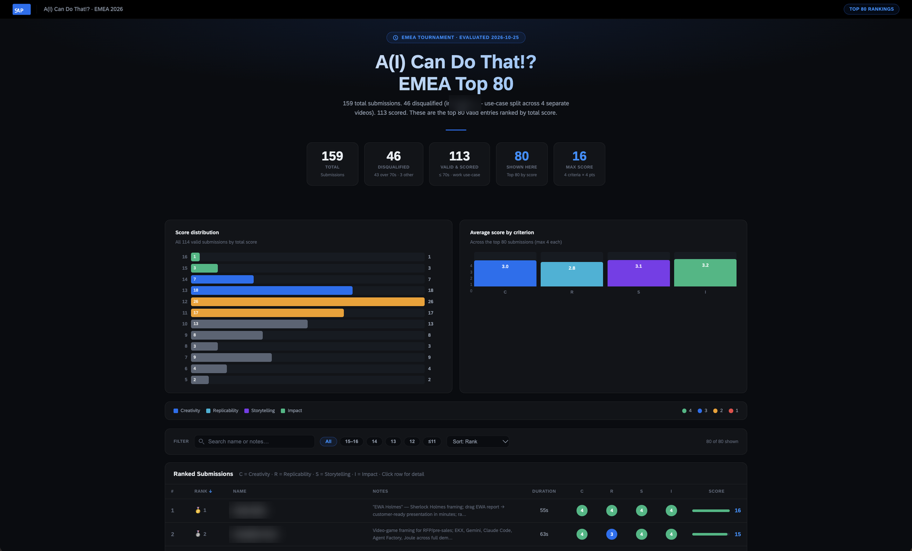
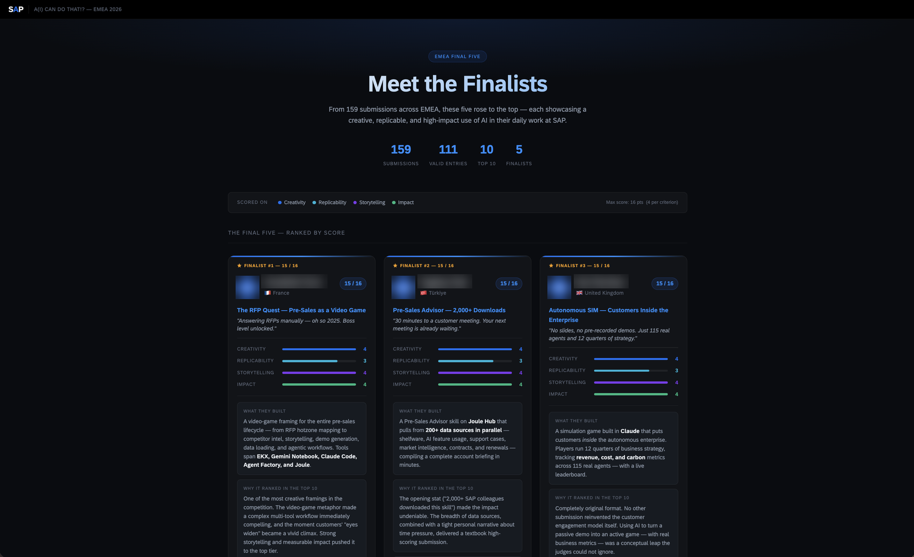
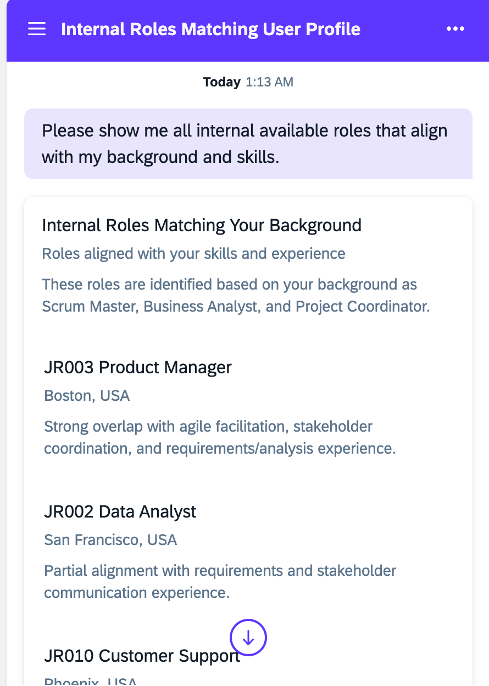
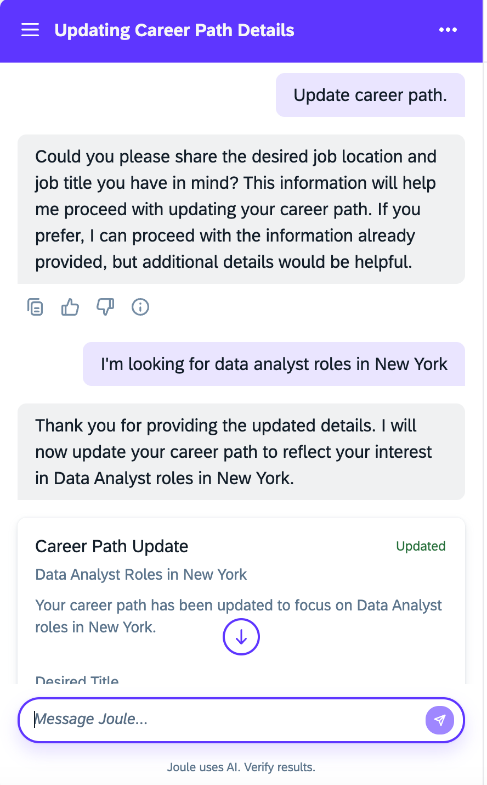
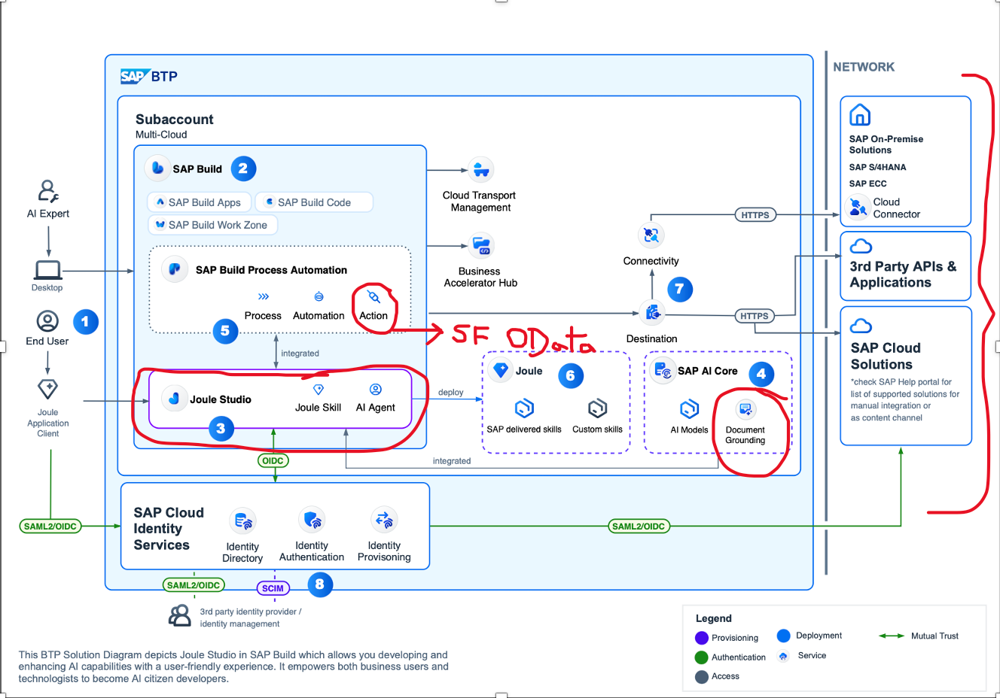
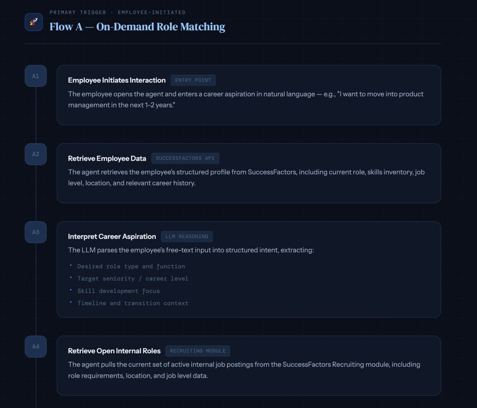
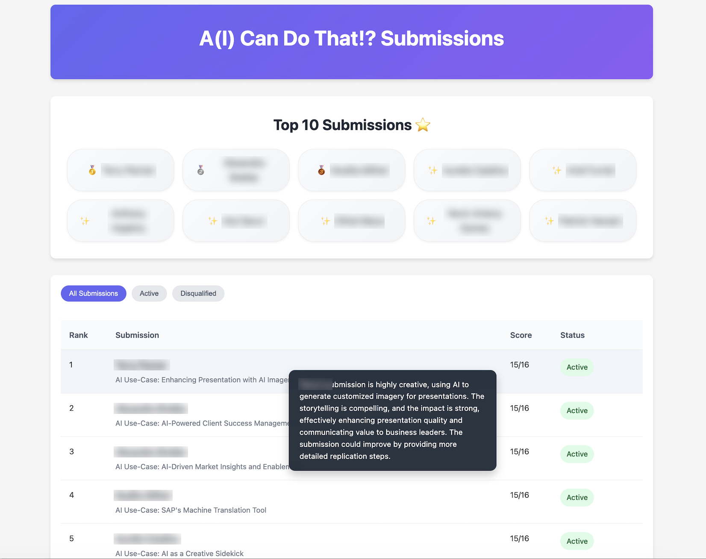
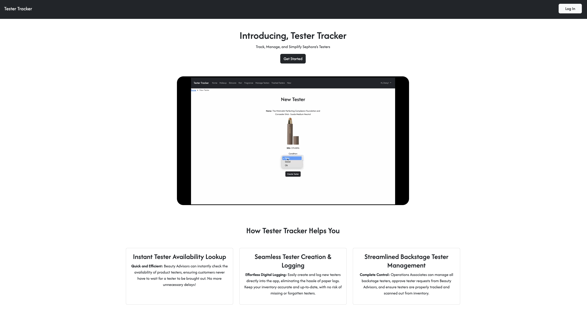
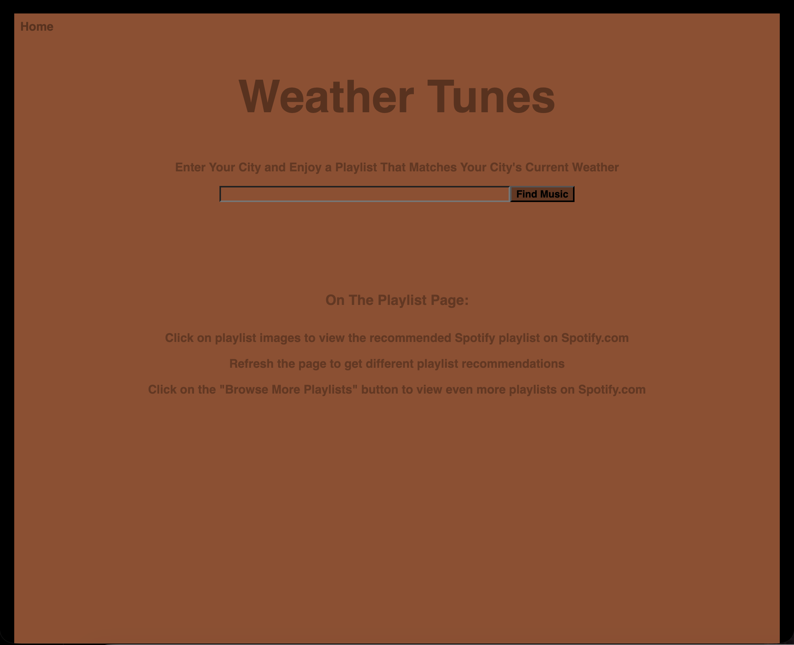

I design AI agents for enterprise systems, build practical tools for retail operations, and ship independent projects that explore what technology can do for everyday work.
For the EMEA edition of the tournament, SAP employees across the region submitted 60-second videos showing how AI resolves a real work process. I built the workflow with Claude Code, starting by collecting and analyzing sample submissions so the scoring would reflect what strong entries actually look like.
I grounded the agent in a detailed rubric — creativity, replicability, storytelling, and impact, four points each — and designed a workflow that took in all 159+ submissions, screened out entries that didn’t meet the requirements, scored the rest, and ranked them. It produced two deployed web applications for the judges: a Top 80 view with score distributions, per-criterion breakdowns, filtering, and notes on every entry, and a Final Five view profiling each finalist with its scores and the reasoning behind its ranking.
The goal was to put judges’ time where it counts. Instead of reviewing every submission, EMEA judges only scored the final five the agent approved from the top 80 — the agent handled the volume, and people made the final call.


Built in Joule Studio, this agent pulls an employee's skills, work history, and stated goals from SAP SuccessFactors modules and matches them against open internal roles. It runs a monthly check-in automatically to keep goals current, and can also be triggered on demand to generate fresh role-fit insights.
The core of the project is custom logic I wrote myself: a relevance-and-matching rubric that scores each open role against an employee's background, plus MCP servers I connected to supply scoring logic and role data to the agent. I also built a test database from scratch to validate the matching before presenting the use case to SAP's HR solution advisors, product teams, and external stakeholders for feedback on viability.
I pitched this use case after noticing a real gap in the employee journey: people's career goals go stale, and internal openings quietly pass them by. This agent is my attempt at closing that gap for any company investing in internal mobility.




SAP employees were invited to submit a 60-second video on how they use AI at work or in daily life, as part of an internal tournament. Over 50 people submitted. I built a custom agent in SAP's Project Agent Builder, grounded in a detailed scoring rubric that shaped how the agent evaluated each entry — fed as transcriptions, not raw video.
The agent scored every submission, produced an overall ranking, and I built a dynamic dashboard to surface the results and highlight the top 10. Judges also hand-scored a sample of submissions so we could check the agent's scoring against human judgment before trusting the ranking — human-in-the-loop was a deliberate part of the design, not an afterthought.
The goal was practical: give the tournament team a trustworthy shortlist without asking anyone to watch an hour of video.

I work as an operations associate at Sephora, which means I see firsthand where process breaks down. Sourcing product testers for customers — and knowing whether one already exists before opening a new one and creating waste — was one of those places. So I designed and coded the whole application myself, end to end, in Ruby on Rails.
It's mobile-first, built to run on the handheld devices already on the floor, and role-aware: as an operations associate and leadership team member, I can create or remove testers and pull monthly insights on which testers get used most. Beauty advisors get a simpler view — see what's available, search by name, and check location, date opened, and SKU without hunting through a stockroom. The interface follows Sephora's own visual language so it feels native to the people using it.
This idea came out of conversations with the operations team and my own frustration finding testers on shift — it's a small tool solving a real, everyday problem.

A mobile-friendly app, coded in Ruby/Sinatra, that pulls current weather for a chosen location and turns it into a Spotify playlist that actually matches the mood outside — rainy-day tracks for rainy days, and so on. It chains together three APIs: weather, location, and Spotify.
This one was pure curiosity — a way to get hands-on with stitching real-time external APIs together into something small and fun. It's currently offline due to API and token constraints, but it did its job: proving out that I could wire three unrelated services into one coherent experience.
